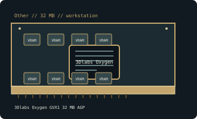

[ OTHER // INDIVIDUAL GPU RECORD ]
3Dlabs Oxygen GVX1 32 MB AGP
1999; GLINT R3 rendering + GLINT Gamma geometry processors; 32 MB SGRAM, 128-bit.

Recorded specifications
| Catalog identity | 3Dlabs Oxygen GVX1 32 MB AGP |
|---|---|
| Model-specific specification | 1999; GLINT R3 rendering + GLINT Gamma geometry processors; 32 MB SGRAM, 128-bit; AGP 2x. |
| Vendor-first catalog | Other vendor directory |
| Model-family index | Other vendors vendor directory |
Compatibility and maintenance
PCI GVX1 is physically/electrically distinct. Identify edge interface/board code, retain Oxygen OpenGL/stereo driver and inspect both processors/cooling.
Sources & further reading
- Hardware museum 3Dlabs Oxygen GVX1Model/family technical or historical reference; confirm the exact board revision and OEM label.